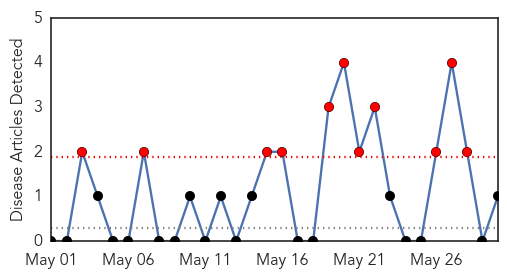
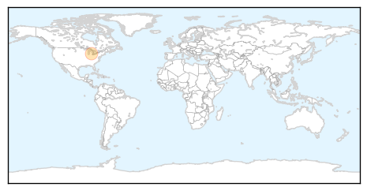
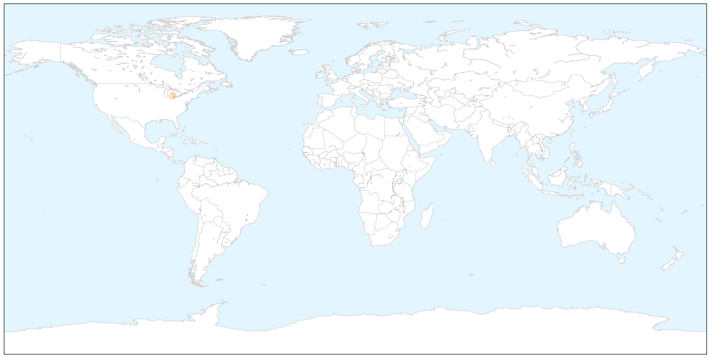
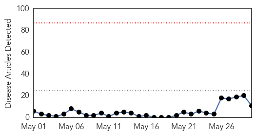
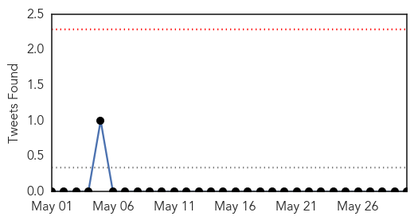
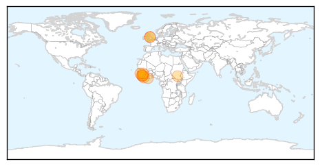

West Nile Virus
30-Day Web Trend
11 alerts, 0 warnings

30-Day Twitter Trend
0 alerts, 0 warnings

Article Locations

X

Article Confidences

Top Articles:
Top Tweets:
-
No tweets found for May 30, 2014
Ebola
30-Day Web Trend
0 alerts, 0 warnings

30-Day Twitter Trend
0 alerts, 0 warnings

Article Locations
Article Confidences

Top Articles:
- 1.000
- West Africa Ebola outbreak still spreading -WHO
- 1.000
- Ebola Virus Outbreak Continues in West Africa
- 1.000
- Sierra Leone confirms 7 Ebola cases amid fears epidemic spreading in West Africa
- 1.000
- West Africa Ebola outbreak still spreading, 'situation serious': WHO
- 1.000
- Sierra Leone raises Ebola death toll, confirms new cases - Sierra Leone
- 1.000
- Sierra Leone Ebola patient's family remove her from local health center
- 1.000
- Ebola Outbreak Confirmed to Have Spread to Sierra Leone
- 1.000
- UPDATE 2-Five dead as Sierra Leone records first Ebola outbreak
- 0.999
- Sierra Leone raises Ebola death toll, confirms new cases
- 0.979
- Ebola Virus sends APC MP, Minister, & Chiefs to Liberia
- 0.977
- 2 killed in Sierra Leone Ebola outbreaks
Top Tweets:
-
No tweets found for May 30, 2014